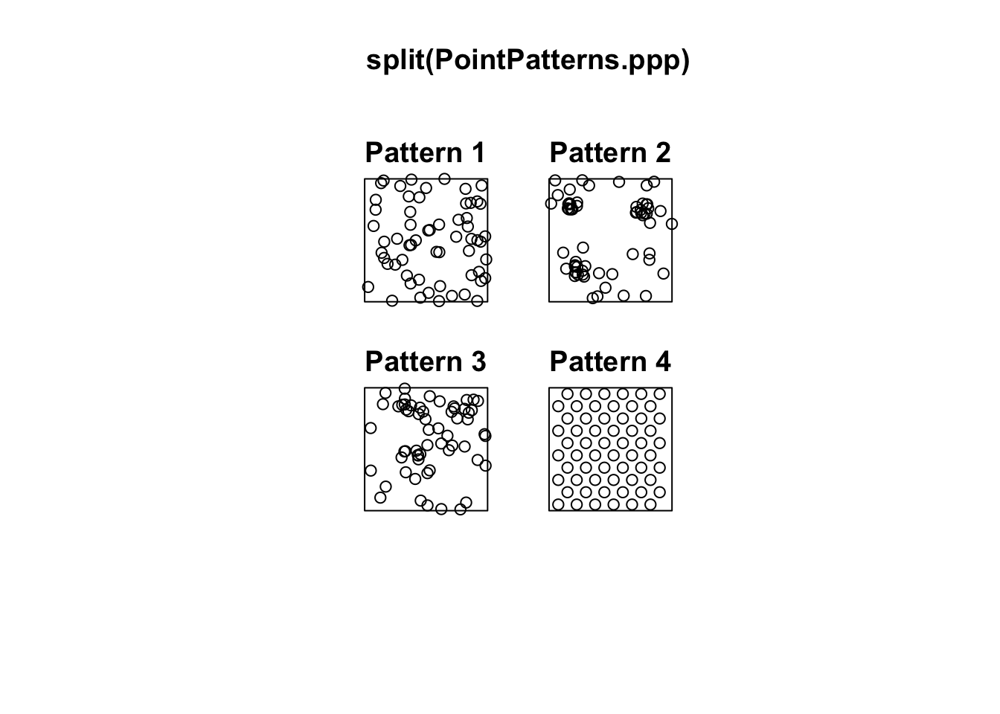
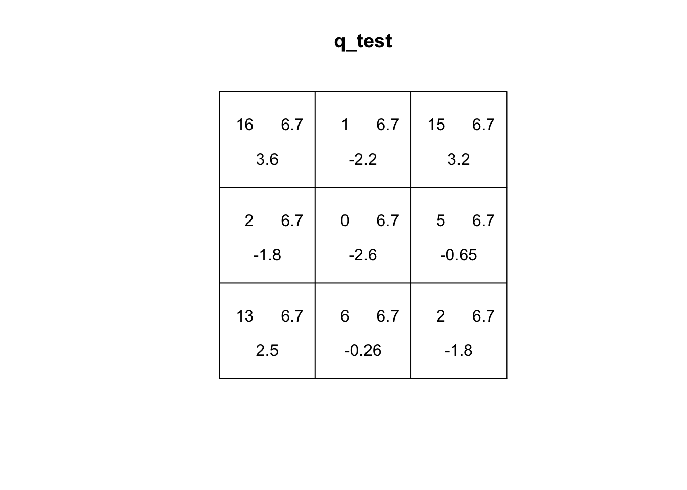
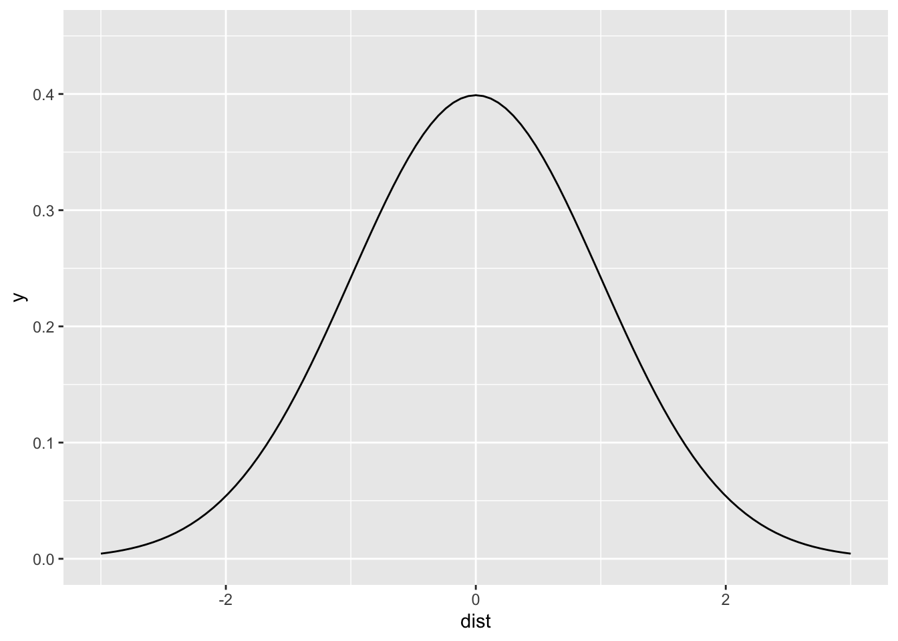
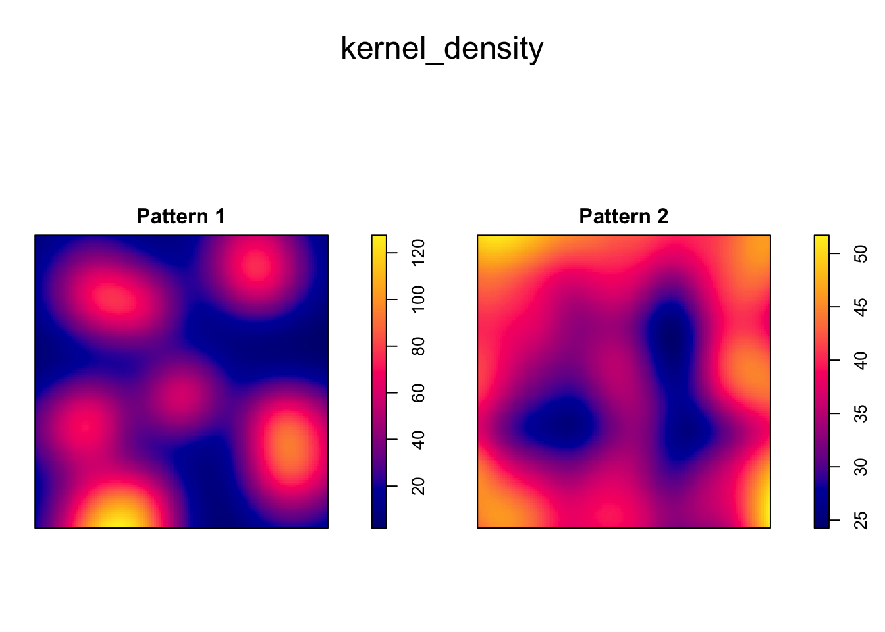

Chapter 11 Point Pattern Analysis II
NOTE: The source files for this book are available with companion package {isdas}. The source files are in Rmarkdown format and packed as templates. These files allow you execute code within the notebook, so that you can work interactively with the notes.
In the last practice/session your learning objectives included:
- A formal definition of point pattern.
- Processes and point patterns.
- The concepts of intensity and density.
- The concept of quadrats and how to create density maps.
- More ways to control the look of your plots, in particular faceting and adding lines.
Please review the previous practices if you need a refresher on these concepts.
11.1 Learning Objectives
In this practice, you will learn:
- The intuition behind the quadrat-based test of independence.
- About the limitations of quadrat-based analysis.
- The concept of kernel density.
- More ways to manipulate objects to do point pattern analysis using
spatstat.
11.2 Suggested Readings
- Bailey TC and Gatrell AC (1995) Interactive Spatial Data Analysis, Chapter 3. Longman: Essex.
- Baddeley A, Rubak E, Turner R (2016) Spatial Point Pattern: Methodology and Applications with R, Chapter 6. CRC: Boca Raton.
- Bivand RS, Pebesma E, Gomez-Rubio V (2008) Applied Spatial Data Analysis with R, Chapter 7. Springer: New York.
- Brunsdon C and Comber L (2015) An Introduction to R for Spatial Analysis and Mapping, Chapter 6, 6.1 - 6.6. Sage: Los Angeles.
- O’Sullivan D and Unwin D (2010) Geographic Information Analysis, 2nd Edition, Chapter 5. John Wiley & Sons: New Jersey.
11.3 Preliminaries
As usual, it is good practice to clear the working space to make sure that you do not have extraneous items there when you begin your work. The command in R to clear the workspace is rm (for “remove”), followed by a list of items to be removed. To clear the workspace from all objects, do the following:
rm(list = ls())Note that ls() lists all objects currently on the workspace.
Load the libraries you will use in this activity:
library(isdas)
library(spatstat)
library(tidyverse)Load the datasets that you will use for this practice:
data("PointPatterns")
data("pp0_df")PointPatterns is a data frame with four sets of spatial events, labeled as “Pattern 1”, “Pattern 2”, “Pattern 3”, and “Pattern 4”. Each set has \(n=60\) events. You can check the class of this object by means of the function class class().
class(PointPatterns)## [1] "data.frame"The second data frame (i.e., pp0_df) includes the coordinates x and y of two sets of spatial events, labeled as “Pattern 1” and “Pattern 2”.
The summary for PointPatterns shows that these point patterns are located in a square-unit window (check the max and min values of x and y):
summary(PointPatterns)## x y Pattern
## Min. :0.0169 Min. :0.005306 Pattern 1:60
## 1st Qu.:0.2731 1st Qu.:0.289020 Pattern 2:60
## Median :0.4854 Median :0.550000 Pattern 3:60
## Mean :0.5074 Mean :0.538733 Pattern 4:60
## 3rd Qu.:0.7616 3rd Qu.:0.797850
## Max. :0.9990 Max. :0.999808The same is true for pp0_df:
summary(pp0_df)## x y marks
## Min. :0.0456 Min. :0.03409 Pattern 1:36
## 1st Qu.:0.2251 1st Qu.:0.22963 Pattern 2:36
## Median :0.4282 Median :0.43363
## Mean :0.4916 Mean :0.47952
## 3rd Qu.:0.7812 3rd Qu.:0.77562
## Max. :0.9564 Max. :0.94492As seen in the previous practice and activity, the package spatstat employs a type of object called ppp (for planar point pattern). Fortunately, it is relatively simple to convert a data frame into a ppp object by means of as.ppp(). This function requires that you define a window for the point pattern, something we can do by means of the owin function:
# "W" will appear in your environment as a defined window with boundaries of (1,1)
W <- owin(xrange = c(0, 1),
yrange = c(0, 1))Then the data frames are converted using the as.ppp function:
# Converts the data frame to planar point pattern using the defined window "W"
pp0.ppp <- as.ppp(pp0_df,
W = W)
PointPatterns.ppp <- as.ppp(PointPatterns, W = W)You can verify that the new objects are indeed of ppp-class:
#"class" is an excellent tool to use when verifying the type of data object
class(pp0.ppp)## [1] "ppp"class(PointPatterns.ppp)## [1] "ppp"11.4 A Quadrat-based Test for Spatial Independence
In the preceding activity, you used a quadrat-based spatial independence test to help you decide whether a pattern was random (the function was quadrat.test). We will now review the intuition of the test.
Let’s begin by plotting the patterns. You can use split to do plots for each pattern separately, instead of putting all of them in a single plot (this approach is not as refined as ggplot2, where we have greater control of the aspect of the plots; on the other hand, it is quick):
#The split functions separates without defining a window.
# This is a quicker option to get relative results
plot(split(PointPatterns.ppp))
Recall that you can also plot individual patterns by using $ followed by the factor that identifies the desired pattern (this is a way of indexing different patterns in ppp-class objects):
# Using "$" acts as a call sign to retrieve information from a data frame.
# In this case, you are calling "Pattern 4" from "PointPatterns.ppp"
plot(split(PointPatterns.ppp)$"Pattern 4")
Now calculate the quadrat-based test of independence:
# `quadrat.test()` generates a quadrat-based test of independence, in this case,
# for "Pattern 2" called from "PointPatterns.ppp", using 3 quadrats in the direction
# of the x-axis and 3 quadrats in the direction of the y-axis
q_test <- quadrat.test(split(PointPatterns.ppp)$"Pattern 2",
nx = 3,
ny = 3)
q_test##
## Chi-squared test of CSR using quadrat counts
##
## data: split(PointPatterns.ppp)$"Pattern 2"
## X2 = 48, df = 8, p-value = 1.976e-07
## alternative hypothesis: two.sided
##
## Quadrats: 3 by 3 grid of tilesPlot the results of the quadrat test:
plot(q_test)
As seen in the preceding chapter, the expected distribution of events on quadrats under the null landscape tends to be quite even. This is because each quadrat has equal probability of having the same number of events (depending on size, when the quadrats are not all the same size the number will be proportional to the size of the quadrat).
If you check the plot of the quadrat test above, you will notice that the first number (top left corner) is the number of events in the quadrat. The second number (top right corner) is the expected number of events for a null landscape. The third number is a residual, based on the difference between the observed and expected number of events. More specifically, the residual is a Pearson residual, defined as follows: \[ r_i=\frac{O_i - E_i}{\sqrt{E_i}}, \] where \(O_i\) is the number of observed events in quadrat \(i\) and \(E_i\) is the number of expected events in quadrat \(i\). When the number of observed events is similar to the number of expected events, \(r_i\) will tend to be a small value. As their difference grows, the residual will also grow.
The independence test is calculated from the residuals as: \[ X^2=\sum_{i=1}^{Q}r_i^2, \] where \(Q\) is the number of quadrats. In other words, the test is based on the squared sum of the Pearson residuals. The smaller this number is, the more likely that the observed pattern of events is not different from a null landscape (i.e., a random process), and the larger it is, the more likely that it is different from a null landscape. This is reflected by the \(p\)-value of the test (technically, the \(p\)-value is obtained by comparing the test to the \(\chi^2\) distribution, pronounced “kay-square”).
Consider for instance the first pattern in the examples:
plot(quadrat.test(split(PointPatterns.ppp)$"Pattern 1",
nx = 3,
ny = 3))
You can see that the Pearson residual of the top left quadrat is indeed -0.6567673, the next to its right is -0.2704336, and so on. The value of the test statistic should be then:
# The "Paste" function joins together several arguments as characters.
# Here, this is a string of values for "X2", where X2" is the squared
# sum of the residuals
paste("X2 = ",
(-0.65)^2 + (-0.26)^2 + (0.52)^2 +
(-0.26)^2 + (0.9)^2 + (0.52)^2 +
(-1)^2 + (0.13)^2 + (0.13)^2)## [1] "X2 = 2.9423"Which you can confirm by examining the results of the test (the small difference is due to rounding errors):
quadrat.test(split(PointPatterns.ppp)$"Pattern 1",
nx = 3,
ny = 3)##
## Chi-squared test of CSR using quadrat counts
##
## data: split(PointPatterns.ppp)$"Pattern 1"
## X2 = 3, df = 8, p-value = 0.1313
## alternative hypothesis: two.sided
##
## Quadrats: 3 by 3 grid of tilesExplore the remaining patterns. You will notice that the residuals and test statistic tend to grow as more events are concentrated in space. In this way, the test is a test of density of the quadrats: is their density similar to what would be expected from a null landscape?
11.5 Limitations of Quadrat Analysis: Size and Number of Quadrats
As hinted by the previous activity, one issue with quadrat analysis is the selection of the size for the quadrats. Changing the size of the quadrats has an impact on the counts, and in turn on the aspect of density plots and even the results of the test of independence.
For example, the results of the test for “Pattern 2” in the dataset change when the number of quadrats is modified. For instance, with a small number of quadrats:
quadrat.test(split(PointPatterns.ppp)$"Pattern 2",
nx = 2,
ny = 1)##
## Chi-squared test of CSR using quadrat counts
##
## data: split(PointPatterns.ppp)$"Pattern 2"
## X2 = 1.6667, df = 1, p-value = 0.3934
## alternative hypothesis: two.sided
##
## Quadrats: 2 by 1 grid of tilesCompare to four quadrats:
quadrat.test(split(PointPatterns.ppp)$"Pattern 2",
nx = 2,
ny = 2)##
## Chi-squared test of CSR using quadrat counts
##
## data: split(PointPatterns.ppp)$"Pattern 2"
## X2 = 6, df = 3, p-value = 0.2232
## alternative hypothesis: two.sided
##
## Quadrats: 2 by 2 grid of tilesAnd:
quadrat.test(split(PointPatterns.ppp)$"Pattern 2",
nx = 3,
ny = 2)##
## Chi-squared test of CSR using quadrat counts
##
## data: split(PointPatterns.ppp)$"Pattern 2"
## X2 = 23.2, df = 5, p-value = 0.0006182
## alternative hypothesis: two.sided
##
## Quadrats: 3 by 2 grid of tilesWhy is the statistic generally smaller when there are fewer quadrats?
A different issue emerges when the number of quadrats is large:
quadrat.test(split(PointPatterns.ppp)$"Pattern 2",
nx = 4,
ny = 4)## Warning: Some expected counts are small; chi^2 approximation may be inaccurate##
## Chi-squared test of CSR using quadrat counts
##
## data: split(PointPatterns.ppp)$"Pattern 2"
## X2 = 47.2, df = 15, p-value = 6.84e-05
## alternative hypothesis: two.sided
##
## Quadrats: 4 by 4 grid of tilesA warning now tells you that some expected counts are small: space has been divided so minutely, that the expected number of events per quadrat has become too thin; as a consequence, the approximation to the probability distribution may be inaccurate.
While there are no hard rules to select the size/number of quadrats, the following rules of thumb are sometimes suggested:
- Each quadrat should have a minimum of two events.
- The number of quadrats is selected based on the area (A) of the region, and the number of events (n): \[ Q=\frac{2A}{N} \] Caution should be exercised when interpreting the results of the analysis based on quadrats, due to the issue of size/number of quadrats.
11.6 Limitations of Quadrat Analysis: Relative Position of Events
Another issue with quadrat analysis is that it is not sensitive to the relative position of the events within the quadrats.
Consider for instance the following two patterns in pp0:
plot(split(pp0.ppp))
These two patterns look quite different. And yet, when we count the events by quadrats:
plot(quadratcount(split(pp0.ppp),
nx = 3,
ny = 3))
This example highlights how quadrats are relatively coarse measures of density, and fail to distinguish between fairly different event distributions, in particular because quadrat analysis does not take into account the relative position of the events with respect to each other.
11.7 Kernel Density
In order to better take into account the relative position of the events with respect to each other, a different technique can be devised.
Imagine that a quadrat is a kind of “window”. We use it to observe the landscape. When we count the number of events in a quadrat, we simply peek through that particular window: all events inside the “window” are simply counted, and all events outside the “window” are ignored. Then we visit another quadrat and do the same, until we have visited all quadrats.
Imagine now that we define a window that, unlike the quadrats which are fixed, can move and visit different points in space. This window also has the property that, instead of counting the events that are in the window, it gives greater weight to events that are close to the center of the window, and less weight to events that are more distant from the center of the window.
We can define such a window by selecting a function that declines with increasing distance. We will call this function a kernel. An example of a function that can work as a moving window is the following.
# Here we create a data.frame to use for plotting; it includes a single column
# with a variable called `dist` for distance, that varies between -3 and 3;
# the function `stat_function()` is used in `ggplot2` to transform an input
# by means of a function, which in this case is `dnorm` the normal distribution!
# `ylim()` sets the limits of the plot in the y-axis
ggplot(data = data.frame(dist = c(-3, 3)),
aes(dist)) +
stat_function(fun = dnorm,
n = 101,
args = list(mean = 0,
sd = 1)) +
ylim(c(0, 0.45))
As you can see, the value of the function declines with increasing distance from the center of the window (when dist == 0; note that the value never becomes zero!). Since we used the normal distribution, this is a Gaussian kernel. The shape of the Gaussian kernel depends on the standard deviation, which controls how “big” the window is, or alternatively, how quickly the function decays. We will call the standard deviation the kernel bandwidth of the function.
Since the bandwidth controls how rapidly the weight assigned to distant events decays, if the argument changes, so will the shape of the kernel function. As an experiment, change the value of the argument sd in the chunk above. You will see that as it becomes smaller, the slope of the kernel becomes steeper (and distant observations are downweighted more rapidly). On the contrary, as it becomes larger, the slope becomes less steep (and distant events are weighted almost as highly as close events).
Kernel density estimates are usually obtained by creating a fine grid that is superimposed on the region. The kernel function then visits each point on the grid and obtains an estimate of the density by summing the weights of all events as per the kernel function.
Kernel density is implemented in spatstat and can be used as follows.
The input is a ppp object, and optionally a sigma argument that corresponds to the bandwidth of the kernel:
# The "density" function computes estimates of kernel density. Here we are creating
# a Kernel Density estimate using "pp0.ppp" from our data frame by means of a
# bandwidth defined by "sigma"
kernel_density <- density(split(pp0.ppp),
sigma = 0.1)
plot(kernel_density)
Compare to the distribution of events:
plot(split(pp0.ppp))
It is important to note that the gradation of colors is different in the two kernel density plots. Whereas the smallest value in the plot on the left is less than 20 and the largest is greater than 100, on the other plot the range is only between 45 to approximately 50. Thus, the intensity of the process is much higher at places in Pattern 1 that in Pattern 2.
The plots above illustrate how the map of the kernel density is better able to capture the variations in density across the region. In fact, kernel density is a smooth estimate of the underlying intensity of the process, and the degree of smoothing is controlled by the bandwidth.